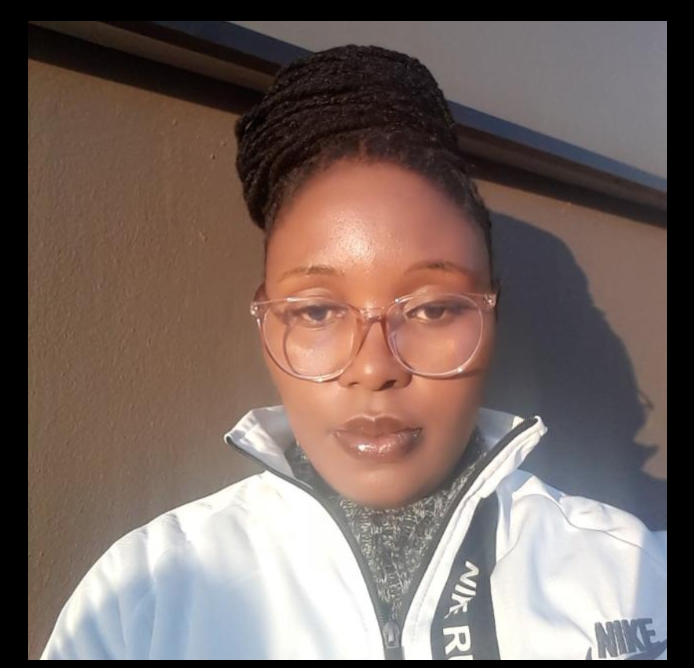

Prayer Marangwanda | WDD130
Hello my name Prayer Marangwanda and l'm a nanny by profession . l live in South Africa and l'm currently studying software development. l love to paint and play with colors using my imagination. l always try to be consistent in my studies even though the course of life is full of ups and downs. l believe one should practice a lot of sports to keep oneself healthy.A healthy mind works better, so it's very important to keep yourself to get forcused.Growing up in a society were dreams were not valued that much , everytime l would share my dreams of becoming a Software developer l would turn to be a joke .l was brought up in a family of 10 kids and my father worked as a trash collector, my mother as a domestic worker , they both did'nt earn that much but they tried their level best to provide for us. Agnaist all odds , l still believe with hard work and determination dreams can still come true.